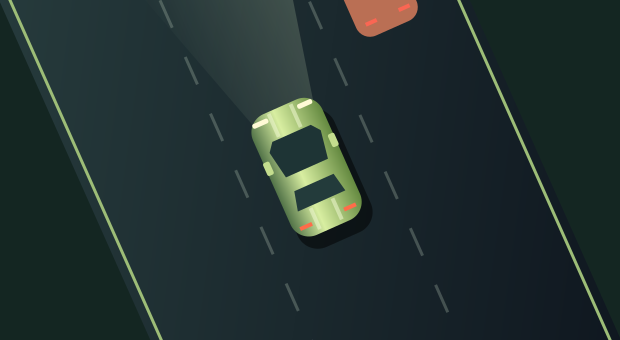
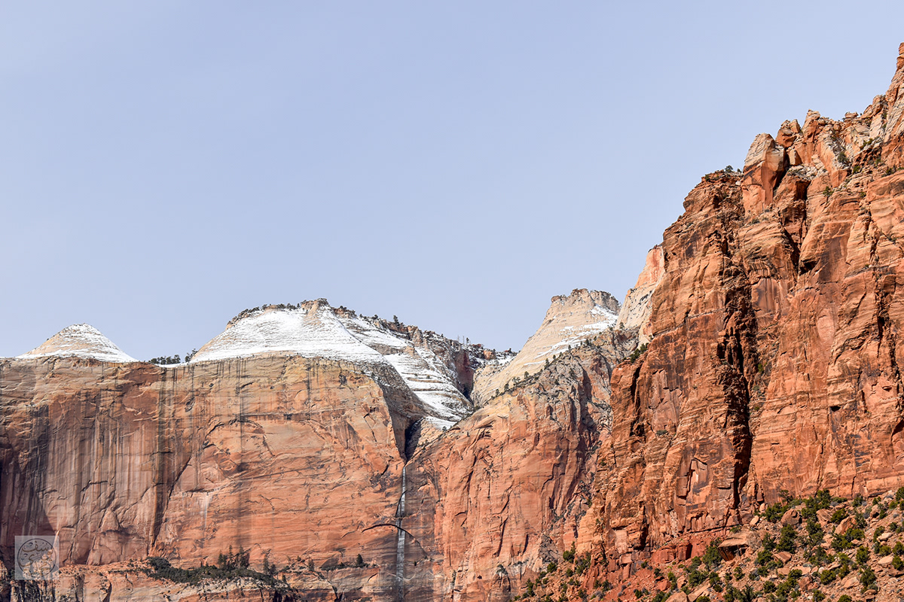

PLAY NOWCODE, CAMERAS & CURIOSITY
Hey, I’m Yusuf.
I build things.
And capture
the rest.
Apps, little experiments, and the world through my lens. Welcome to my corner of the internet.
Explore my workAlways curious.
Usually making something.
Usually making something.

A FEW THINGS I’M INTO
Building. Exploring. Seeing things differently.
01 / MADE WITH CURIOSITY
Things I’ve built.
DropBar
Drop files hereA little closer to AirDrop.
DropBar
A lightweight menu bar app. Drag, drop, and send files to nearby Apple devices.
View repository02 / AWAY FROM THE KEYBOARD
Out of office.
Into the frame.
A few moments worth slowing down for.
Photographs from my personal collection.
03 / ELSEWHERE ON THE INTERNET
Let’s stay
connected.
More projects, photos, and whatever comes next.
Enjoying my projects? You can support the next one.
☕ Buy me a coffee